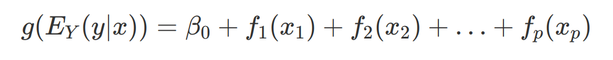

Generalized Linear Models (GLM)
- Linear regression models have their drawbacks. Their assumptions also may not hold in real datasets. To overcome the assumptions and limitations of linear regression we have GLM
- GLM are used when target is not following gaussian distribution
- GAM are used when there is non-linear relationship between features and target
GLM
- The core concept of GLM is to keep the weighted sum of features, but allow non-gaussian outcome distribution and connect the expected mean of this distribution (from exponential family of distributions) and the weighted sum through a possibly nonlinear function (link function). Example, logistic regression model assumes bernoulli distribution for the outcome and links the expected mean and weighted sum using the logistic function
GAM (Generalized Additive Models)
- It assumes that the outcome can be modeled by a sum of arbitary functions of each feature. 
- Using a flexible function allow non-linear relationships between some features and the output.
- Spline functions help learn nonlinearity
- Splines are functions that are constructed from similar basis functions. Splines can be used to approximate other, more complex functions.
- Nonlinear modeling with slines is fancy feature engineering
- Let us assume we need to model a feature. We remove the feature from the data and replcae it with spline basis functions. For example four spine basis functions for the feature which we are interested. The value for each of the four spline feature depends on the original feature instance. Then weights are assigned to each of the spline basis function.
Challenges & Solutions with linear models
- Data violates IID, Example - Repeated measurements from same patient - Mixed models
- Heteroscedastic - Variance of errors is not constant - For expensive houses error of price prediction will be higher - Robust regression
- Outliers - Robust regression
- Time until an event occurs - Parametric survival models, cox regression, survival analysis
- Predict ordered categories - Proportional odds model
- Outcome is a count - Poisson regression
- If the count value of zero is very frequent - Zero inflated poisson regression, hurdle model
- cause and effect - Causal inference, mediation analysis
- Missing data - Multiple imputation
- Integrate prior knowledge into my model - Bayesian inference
GAM
- It keeps input features independent and also allow for complex modeling of each feature’s behavior
- The output is a linear combination of parameters and some functions applied to data input values
- Neural Additive Model - A neural network is used to fit the shape function
- Model Editing - Change out parts of a model to better match reality or human intuition is model editing.
- Amenable to model editing
GA2M
- 2 in GA2M means consideration of a small group of pairwise interactions as inputs to the model
- EBM
- Each feature fitted with boosted tree
- Trees have advantages over spline functions - scalable, accept categorical or missing data
Decision Trees
- Parent-child relationships, especially near the top of the tree, tend to point toward feature interactions
- Decision tree does not end up with the best model for the dataset, but instead is one good candidate for the best model out of many, many possible options. (Rashomon effect)
- Rashomon effect will lead to underspecification - Good performance on validation data but failing in real world
- To overcome this problem:-
- optimal decision trees
- Manual constraints using human domain knowledge
Constrained XGBoost
- XGBoost now supports monotonicity and interaction constraints
- constrained xgboost can be used with a post-hoc explainable methods